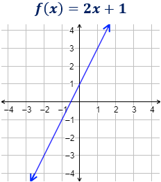
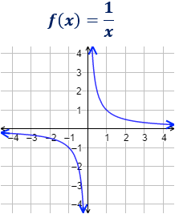

Intuitivamente, una función es continua si su gráfica se puede trazar sin
levantar el lápiz del papel.

Cuendo existen puntos en los que es necesario levantar el lápiz del papel, se
dice que la función es discontinua en estos puntos, que se denominan puntos
de discontinuidad. 
6.5.1 Ejercicios
Problema 24
Estudia la continuidad de las siguientes funciones::